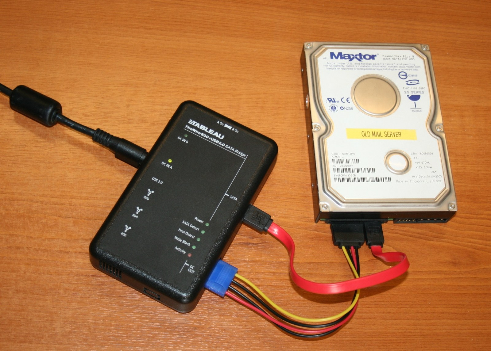
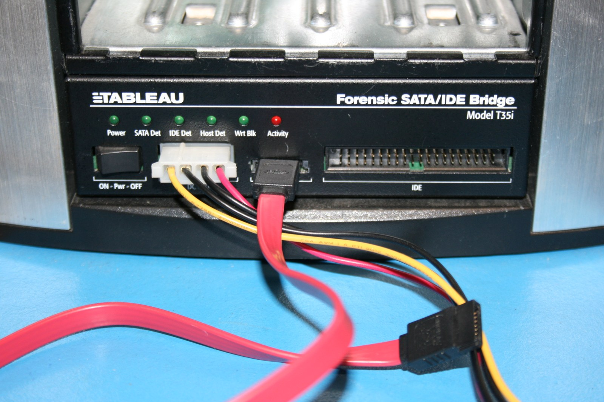

Evidence integrity الـ integrity في الدليل
And the two records that carry what it cannot. و السجلّان اللذان يحملان ما تعجز الـ hash عن حمله.
- state in one sentence what a matching hash actually proves — and defend it. أن تصوغ في جملة واحدة ما تثبته الـ hash المتطابقة فعلاً، و أن تدافع عن تلك الجملة.
- read a
FAILEDresult without saying a word you cannot support. أن تقرأ نتيجةFAILEDدون أن تنطق بلفظ لا تستطيع إسناده إلى دليل. - show how a write blocker was used, when the image itself records nothing about it. أن تُثبت استخدام الـ write blocker، مع أن ملف النسخة لا يسجّل عنه شيئًا.
Where we are أين نحن الآن — و ما الذي يتغيّر هنا
Last page you signed that your examination platform was in a known, described state before any evidence touched it, and you can name the snapshot. في الصفحة السابقة وقّعت على أن منصة الفحص كانت في حالة معروفة موصوفة قبل أن يمسّها أي دليل، و تستطيع تسمية الـ snapshot الذي يُثبت ذلك.
The evidence is different. It arrives from somewhere you did not control, and you cannot snapshot someone else’s disk. So what can you actually prove about it? أما الدليل فأمره مختلف. يصلك من مكان لم تكن تسيطر عليه، و لا يمكنك أخذ snapshot لقرص شخص آخر. فما الذي يمكنك إثباته عنه حقًا؟
“I hash it.” That is the right tool and the wrong confidence. This page is about the gap between the two. «آخذ الـ hash الخاص به.» و هي الأداة الصحيحة، لكن بثقة أكبر مما تستحق. و هذه الصفحة كلها عن الفجوة بين الاثنين.
What a hash proves, and what it does notما الذي يُثبته الـ hash و ما الذي لا يُثبته
One function, one answer, and four separate claims people make with it that it cannot support. Each limit gets its own screen.دالة واحدة تعطي إجابة واحدة، و أربعة ادعاءات يبنيها الناس عليها و هي لا تستطيع حملها. و لكل حدٍّ من هذه الحدود شاشة مستقلة.
What is a hash? ما هو الـ hash؟
A hash is a one-way function: any input, any size, in — a fixed-length digest out. Change one bit and the digest changes completely and unpredictably. That is the avalanche property, and it is the whole basis of using hashes on evidence. دالة أحادية الاتجاه: تستقبل مدخلاً بأي حجم و تُخرج hash ثابتة الطول. و تغيير بت واحد يغيّر الـ hash تغييرًا كاملاً لا يمكن التنبؤ به. هذه خاصية الانهيار (avalanche)، و عليها يقوم استعمال الـ hashes في الأدلة كله.
A value you did not compute is a claim about a value. Run the command. القيمة التي لم تحسبها بنفسك ليست إلا ادعاءً عن قيمة. نفّذ الأمر و احسبها.
What a matching hash proves ما الذي يثبته تطابق الـ hash
Two byte streams are identical, to within the collision resistance of the function. أن تدفّقَي الـ bytes متطابقان، في حدود مقاومة الدالة للتصادم.
That is genuinely valuable, and it is two different things at once: it shows a copy equals its source at acquisition, and re-running it months later shows that nothing in your own custody changed the image. و هذه فائدة حقيقية، و هي فائدتان في آن: تُظهر أن النسخة تساوي مصدرها لحظة الـ acquisition، و إعادتها بعد شهور تُظهر أن شيئًا في عهدتك أنت لم يغيّر النسخة.
Everything on the rest of this page is a consequence of the four words “as read at that moment”. كل ما يأتي في بقية هذه الصفحة نتيجةٌ لعبارة واحدة: «كما قُرئ في تلك اللحظة».
#1 It does not prove the copy is complete #1 لا تُثبت أن النسخة كاملة
A drive can hold a host protected area — a region the interface does not report. If the imaging tool never sees it, the tool never reads it. قد يحتوي القرص على HPA (HPA) لا تُعلن عنها الواجهة. فإن لم ترها أداة النسخ، لم تقرأها أصلاً.
The unread region is absent from the source hash and from the image hash. The two agree perfectly — about a partial copy. المنطقة غير المقروءة غائبة عن hash المصدر و عن hash النسخة معًا. فتتطابق قيمتا الـ hash تطابقًا تامًا — على نسخة ناقصة.
A hash compares two reads. It has nothing to say about what was never read. الـ hash تقارن قراءتين. و ليس لديها ما تقوله عمّا لم يُقرأ قط.
#2 A mismatch does not mean tampering #2 عدم التطابق لا يعني العبث
Every one of these produces the same FAILED, with nobody at fault:
كل حالة من هذه الحالات تُنتج نتيجة FAILED نفسها، دون أن يكون أحد قد أخطأ:
| A failing sectorقطاع تالف | the drive returns different bytes on the second read القرص يُعيد bytes مختلفة عند القراءة الثانية. |
| A cable or controller faultعطل في الكابل أو المتحكم | a transfer error corrupts one block in transit خطأ في النقل يُفسد كتلة واحدة أثناء انتقالها. |
| SSD garbage collectionتنظيف الذاكرة في أقراص SSD | after TRIM, a deleted region can read differently the second time — the drive did it to itself, with no command from you بعد أمر TRIM قد تُقرأ منطقة محذوفة قراءةً مختلفة في المرة الثانية — و القرص فعل ذلك بنفسه دون أمر منك. |
| A text editorمحرّر نصوص | saving a file can rewrite every line ending مجرّد حفظ الملف قد يعيد كتابة نهايات الأسطر كلها. |
FAILED carries no cause, no time, no identity — and no magnitude.
A one-character edit and a total replacement produce the same line.
نتيجة FAILED لا تحمل سببًا و لا وقتًا و لا هوية — و لا مقدارًا. فتعديل حرف واحد و استبدال الملف بالكامل يُنتجان السطر نفسه.
#3 It does not prove authenticity #3 لا تُثبت الأصالة
The hash compares a copy to a source. It is silent on every question about the source itself. الـ hash تقارن نسخةً بمصدر. و هي صامتة تمامًا أمام كل سؤال عن المصدر نفسه.
| The question | What answers it |
|---|---|
| Is this the drive that was seized?أهذا هو القرص الذي جرى ضبطه؟ | the chain of custodyالـ chain of custody. |
| Whose data is on it?لمن هذه البيانات؟ | the seizure record and the investigationمحضر الضبط و التحقيق. |
| Was it already altered before I arrived?هل جرى تغييرها قبل وصولي؟ | nothing you hold — state it as a limitationلا شيء مما بين يديك. اذكرها بوصفها حدًّا من حدود الفحص. |
“The evidence is authentic because the hash matched” is not a stronger claim than the evidence supports — it is a different claim entirely, about provenance, resting on a measurement of equality. قولك «الدليل أصلي لأن الـ hash تطابقت» ليس مبالغةً في ادعاء يسنده الدليل، بل هو ادعاء مختلف كليًا عن مصدر الدليل، مبنيّ على قياس للتطابق لا غير.
#4 Where the digest is stored #4 موضع حفظ الـ hash هو ما يحدّد قيمتها
Someone who can alter the image and alter the file holding its digest simply recomputes. The protection was never the strength of the function — it is where the value is stored. من يستطيع تعديل النسخة و تعديل الملف الذي يحوي الـ hash الخاصة بها، يعيد حسابها و ينتهي الأمر. فالحماية لم تكن يومًا في قوة الدالة، بل في موضع حفظ القيمة.
Our own source material states at one point that hashes “prove that the file has not been tampered with” — and, on the next slide, that the hash must be stored securely and separately. The second statement is the true one, and it is true because of where the value lives. تذكر مادتنا المصدرية في موضع أن الـ hash «تثبت أن الملف لم يُعبث به»، ثم تذكر في الشريحة التالية أن الـ hash يجب أن تُحفظ في مكان آمن منفصل. و العبارة الثانية هي الصحيحة، و صحّتها نابعة من موضع حفظ القيمة نفسه.
This is shown deliberately. A respected source stated it loosely and corrected itself. An analyst who has never seen an authority be imprecise learns to trust authorities instead of evidence — which is the opposite of this profession. و عرضُ هذا مقصود. فمصدر موثوق صاغ العبارة صياغةً غير دقيقة ثم صحّح نفسه. و المحلل الذي لم يرَ قط مصدرًا معتبرًا يُخطئ، يتعلّم أن يثق في المصادر بدلاً من أن يثق في الدليل — و هذا نقيض هذه المهنة.
The four cases side by side الحالات الأربع جنبًا إلى جنب
Where authenticity lives أين تعيش الأصالة فعلاً
Everything the hash cannot carry is carried by two records. You write both. Neither can be reconstructed afterwards. كل ما تعجز الـ hash عن حمله يحمله سجلّان. أنت من يكتبهما، و لا يمكن إعادة بنائهما بعد فوات الأوان.
| Record | What only it can say |
|---|---|
| Chain of custodyالـ chain of custody | who held this exhibit, when, and what they did to it — unbroken from seizure من حاز هذا الـ exhibit، و متى، و ما الذي فعله به — متصلاً دون انقطاع منذ لحظة الضبط. |
| The write-block proof trailartifact إثبات الـ write blocker | that write commands could not reach the media during this acquisition أن أوامر الكتابة لم تكن تصل إلى الـ media أثناء عملية الـ acquisition هذه. |
Both are things you do at the time, by hand. A hash can be recomputed next year. A custody line you did not write at 09:12 does not exist, and no tool will produce it for you. كلاهما عمل تؤدّيه في حينه و بيدك. فالـ hash يمكن إعادة حسابها بعد عام. أما سطر الـ custody الذي لم تكتبه في الساعة ٩:١٢ فهو غير موجود، و لن تُنتجه لك أداة.
Preserving the evidenceحفظ الدليل
A hash answers a question about a copy. This part is about the paperwork and the hardware that make the copy worth asking about.يجيب الـ hash عن سؤال يخصّ النسخة. و هذا الجزء عن الإجراءات و العتاد اللذين يجعلان تلك النسخة جديرة بالسؤال أصلاً.
What is chain of custody? ما هي الـ chain of custody؟
- No unexplained time gap. ألا توجد فجوة زمنية بلا تفسير.
- No transfer without two signatures. ألا يقع تسليم دون توقيعين.
- Hashes recorded at seizure that still match today. أن تكون قيم الـ hash المسجَّلة عند الضبط ما زالت مطابقة اليوم.
Physical control is part of the same record: antistatic bag, padding, sealed container, and tape signed across the seal so that re-opening is visible. و الضبط المادي جزء من السجل نفسه: كيس مضاد للكهرباء الساكنة، و حشو، و container مختومة، و شريط مُوقَّع عبر موضع الختم ليصبح أي فتح لاحق ظاهرًا للعيان.
A custody form proves continuity of the exhibit. It says nothing about whether the data was genuine before seizure. استمارة الـ chain of custody تثبت اتصال custody الـ exhibit. و لا تقول شيئًا عن سلامة البيانات قبل الضبط.

A perfect chain does not by itself win admissibility. A single unexplained gap is enough to lose it — the other side only has to raise the possibility of substitution. السلسلة السليمة لا تكسب القبول وحدها. لكن فجوة واحدة بلا تفسير تكفي لخسارته، فيكفي الطرف الآخر أن يثير احتمال الاستبدال.
What is a write blocker? ما هو الـ write blocker؟
A write blocker filters write commands out of the path before they reach the media. It matters because attaching a disk to a running Windows machine is a write: Windows touches the volume, updates journal state, and can mount and modify without being asked. الـ write blocker يحجب أوامر الكتابة قبل بلوغها الـ media. و أهميته أن توصيل قرص بجهاز ويندوز يعمل هو في ذاته كتابة: فويندوز يمسّ وحدة التخزين، و يحدّث حالة السجل، و قد يضمّها و يعدّلها دون أن يُطلب منه ذلك.


An image taken on a write blocker and an image taken without one are byte-identical. There is no field. No tool can tell anyone afterwards. النسخة المأخوذة عبر مانع كتابة و النسخة المأخوذة بدونه متطابقتان byte بـ byte. لا توجد خانة تسجّل ذلك. و لا تستطيع أي أداة إخبار أحد به لاحقًا.
So “a write blocker was used” is a claim that lives or dies entirely on your documentation. و بذلك تكون عبارة «استُخدم write blocker» ادعاءً يحيا أو يموت بتوثيقك وحده.
The write-block proof trail artifact إثبات الـ write blocker
The software write-block fallback البديل البرمجي لالـ write blocking
When no hardware blocker is available, Windows can present USB mass-storage volumes read-only. It is free and always to hand — and it is a fallback, not an equal. حين لا يتوفّر مانع كتابة عتادي، يستطيع ويندوز أن يعرض وحدات تخزين USB للقراءة فقط. و هو متاح دائمًا و بلا تكلفة — و هو بديل، لا نظير.
HKEY_LOCAL_MACHINE\SYSTEM\CurrentControlSet\Control\StorageDevicePoliciesThis value is in your registry, not the evidence’s. It is not per-device and not timestamped, so it says something about your workstation and nothing about how any particular exhibit was handled. هذه القيمة في سجل جهازك أنت، لا في الدليل. و هي ليست خاصة بجهاز بعينه و لا مقترنة بوقت، فتقول شيئًا عن محطة عملك و لا شيء عن كيفية التعامل مع exhibit بعينه.
Set the value, skip the reboot, plug the evidence in, write “software write blocked” in the report. Windows writes to it happily. Demonstrate the block on a scratch stick first — attempt a write, confirm it fails, log the result. يضبط الفاحص القيمة، و يتجاوز إعادة التشغيل، و يوصّل الدليل، ثم يكتب في التقرير «مُنعت الكتابة برمجيًا». و ويندوز يكتب عليه دون عائق. جرّب المنع أولاً على ذاكرة اختبارية: حاول الكتابة، و تأكّد من فشلها، و سجّل النتيجة.
Reading an imager’s verification log قراءة سجل التحقق في أداة النسخ
Every imager writes a log ending in a line like MD5 checksum: … : verified. Students
read it as independent confirmation. It is not.
كل أداة نسخ تكتب سجلاً ينتهي بسطر مثل MD5 checksum: … : verified. و يقرؤه الطلاب بوصفه تأكيدًا مستقلاً. و ليس كذلك.
The write-then-read round trip was clean. دورة الكتابة ثم القراءة تمّت سليمة.
Anything about the source, which the tool never re-read. It also does not record whether a write blocker was attached, or which physical device was selected — so it cannot detect that you imaged the wrong disk. أي شيء عن المصدر، فالأداة لم تُعد قراءته. كما أنها لا تسجّل هل كان الـ write blocker موصولاً، و لا أي جهاز فعلي جرى اختياره — فلا تستطيع كشف أنك نسخت القرص الخطأ.
Verify a set you did not createالمعمل — التحقق من مجموعة لم تُنشئها أنت
Watch the set verified once: four documents, two manifests, a letter that says everything checked. One file fails — and you repeat the whole verification on your own in the task.شاهد التحقق من المجموعة مرة واحدة: أربع وثائق، و ملفَّا manifest، و خطاب يقول إن كل شيء تحقّق. ملف واحد يخفق — و تعيد التحقق كله بنفسك في الـ task.
Lab — verify a set you did not create التحقق من مجموعة لم تُنشئها أنت
Four documents and two manifests from case ITG-2026-014. Three verify. One does
not.
أربع وثائق و ملفَّا manifest من القضية ITG-2026-014. ثلاث تجتاز التحقق، و واحدة لا تجتازه.
Full steps, each with its verification line, in guided_lab.md.
الخطوات كاملة، و مع كل خطوة سطر التحقق منها، في guided_lab.md.
Sorting results, and one defect huntترتيب النتائج، و البحث عن خلل
You classify four results with no help, then find the integrity defect in a public training room that thousands of people have finished without noticing it.تُصنّف أربع نتائج دون مساعدة، ثم تبحث عن خلل في الـ integrity داخل غرفة تدريب عامّة أنهاها آلاف المتدربين دون أن ينتبهوا إليه.
Exercises — sorting results and finding a defect تمارين — فرز النتائج و صيد الخلل
(a) Sort five results · 4 min(أ) فرز خمس نتائج · ٤ دقائق
Three buckets: integrity intact · integrity broken · cannot tell from this. Read the question in each scenario, not just the result — two of the five ask something a hash cannot answer at all. ثلاثة تصنيفات: الـ integrity سليمة · الـ integrity مختلّة · لا يمكن الحكم من هذا. اقرأ السؤال في كل حالة لا النتيجة وحدها — فاثنتان من الخمس تسألان عمّا لا تستطيع الـ hash الإجابة عنه أصلاً.
Success criterion: you used cannot tell from this at least twice, and for each you can name the evidence that would answer the question. معيار النجاح: أن تستعمل تصنيف لا يمكن الحكم من هذا مرتين على الأقل، و أن تسمّي في كل مرة الدليل الذي كان سيجيب عن السؤال.
(b) The defect hunt · 5 min(ب) صيد الخلل · ٥ دقائق
A widely used free training room verifies a disk image’s MD5, confirms the match — and on the very next page runs: غرفة تدريب مجانية واسعة الانتشار تتحقق من hash MD5 لنسخة قرص و تؤكّد التطابق — ثم تنفّذ في الصفحة التالية مباشرةً:
Write three things: what the command writes into the image · the command you would use instead, with every option justified · one report sentence on what you can and cannot now say about that image. اكتب ثلاثة أمور: ما الذي يكتبه الأمر داخل النسخة · و الأمر الذي كنت ستستعمله بدلاً منه مع تبرير كل خيار فيه · و جملة تقرير واحدة عمّا يمكنك و ما لا يمكنك قوله عن تلك النسخة الآن.
The room is not bad — its audit-trail task is the best treatment of logging the examiner in any room reviewed for this course. A source can be worth using and wrong in one place. Telling which is which is the job. و الغرفة ليست رديئة — فمهمة artifact التدقيق فيها أفضل معالجة لفكرة أن يسجّل الفاحص نفسه بين كل الغرف التي راجعناها لهذه الدبلومة. قد يستحق المصدر أن يُستعمل و يكون مخطئًا في موضع. و التمييز بينهما هو العمل نفسه.
Knowledge check اختبار الفهم
An imager’s log reads MD5 checksum: … : verified. Which two things
did the tool compare?
سجل أداة النسخ يقول MD5 checksum: … : verified. أي شيئين قارنتهما الأداة؟
Two identical unlabelled drives were seized from the same office. Both images verify perfectly. Which desk did each come from?
Neither hash can say. A digest carries no provenance. The answer needed to exist at seizure — a label, a photograph, a note — and it was never created. This is why INE files unlabelled exhibits under commingling: after that moment, no form on earth can recover it. لا تستطيع أي hash الإجابة. فالـ hash لا تحمل معلومات عن المصدر. و الإجابة كان يجب أن توجد لحظة الضبط — بطاقة أو صورة أو ملاحظة — و لم تُنشأ قط. و لهذا تُصنَّف الـ exhibits غير المعلَّمة تحت الاختلاط: فبعد تلك اللحظة لا توجد استمارة على وجه الأرض تستطيع استرجاعها.
Full quiz in quiz.md, with the answer key. Two of them — Q3 and Q10 —
are the same idea at different depths: Q3 asks you to state a mismatch without over-claiming, Q10
asks you to notice a match that has quietly stopped being true.
الاختبار الكامل في quiz.md و معه نموذج الإجابة. و سؤالان منه — الثالث و العاشر — يقيسان الفكرة نفسها بعمقين: الثالث يطلب وصف عدم التطابق دون تجاوز، و العاشر يطلب ملاحظة تطابقٍ لم يعد صحيحًا في صمت.
The one screen you keep openالشاشة التي تُبقيها مفتوحة
What a match and a mismatch each mean, and where authenticity actually lives — in the form you reach for it in the next lab.ماذا يعني التطابق و عدمه، و أين تعيش الأصالة فعلاً — بالشكل الذي ستحتاجه في الـ lab القادم.
Cheat sheet — hashes, custody, the write blocker ورقة المراجعة — الـ hash و الحيازة و الـ write blocker
One screen for the next lab: what a match and a mismatch each prove, and the four records that carry a write blocker.شاشة واحدة للـ lab القادم: ماذا يثبت التطابق و عدمه، و السجلات الأربعة التي تحمل الـ write blocker.
- Match — the copy equals the source as read at that moment. Nothing more. التطابق: النسخة تساوي المصدر كما قُرئ في تلك اللحظة. لا أكثر.
- Mismatch — these differ. No cause, no time, no identity, no magnitude. عدم التطابق: هما مختلفان. بلا سبب و لا وقت و لا هوية و لا مقدار.
- Both digests — MD5 and SHA-256, every row, always. قيمتا الـ hash: MD5 و SHA-256، في كل سطر، دائمًا.
- Store the hash elsewhere — beside the image it protects nothing. احفظ الـ hash في مكان آخر: بجوار النسخة لا تحمي شيئًا.
- Write blocker — the image records nothing. The proof is four records outside it. الـ write blocker: النسخة لا تسجّل عنه شيئًا. و الإثبات أربعة سجلات خارجها.
verified— the tool checked its own round trip, not the source.verified: راجعت الأداة دورتها هي، لا المصدر.
Handed in before P03يُسلَّم قبل P03
You verify a set on your own, then fill the two report sections a defence reads first — Sections 4 and 5, where a case is lost before any analysis is questioned.تتحقق من مجموعة بنفسك، ثم تملأ القسمين اللذين يقرؤهما الدفاع أولاً — الرابع و الخامس، حيث تسقط القضية قبل أن يُناقَش أي تحليل.
Task — prove integrity you did not create الـ task — أثبت integrity لم تُنشئها أنت
You watched one set verified. Now you verify four on your own — and this week criterion 1 (integrity) carries the most weight.شاهدت التحقق من مجموعة واحدة. الآن تتحقق من أربعة بنفسك — و هذا الأسبوع المعيار الأول (الـ integrity) هو الأعلى وزنًا.
Four tasks in homework.md, due before P03. Graded on the same rubric, with
criterion 1 (Integrity) weighted heaviest this week.
أربع مهام في homework.md، تُسلَّم قبل P03. و تُقيَّم بالمعايير نفسها، مع ترجيح المعيار الأول (الـ integrity) هذا الأسبوع.
Criterion 1 asks whether Sections 4 and 5 read as measurements, not claims: two matching source hashes across the run, both digests on every row, and no unaccounted transfer on the custody line.المعيار الأول يسأل: هل كُتب القسمان الرابع و الخامس كـقياسات لا ادعاءات؟ تطابق hash المصدر قبل و بعد، القيمتان في كل سطر، و لا تسليم غير موثَّق في سطر الحيازة.
Report — Sections 4 and 5 التقرير — القسمان الرابع و الخامس
Fill Section 4 Chain of custody and Section 5 Evidence received for
EVI-SRC01, transcribing from the EVS-01 forms.
املأ القسم الرابع: الـ chain of custody و القسم الخامس: الأدلة المستلَمة للـ exhibit EVI-SRC01، ناقلاً من استمارات EVS-01.
| The rule | Why it is not negotiable |
|---|---|
| Both digests, every rowقيمتا الـ hash معًا في كل سطر | MD5 and SHA-1 are broken for collision resistance. Recording both means a challenge to one function does not take the exhibit with it. One digest is a single point of failure you chose. دالّتا MD5 و SHA-1 مكسورتان من جهة مقاومة التصادم. و تسجيل الاثنتين يعني أن الطعن في إحداهما لا يُسقط الـ exhibit. أما hash واحدة فنقطة انهيار وحيدة اخترتها بنفسك. |
| The hash lives where the exhibit does notالـ hash تُحفظ في غير موضع الـ exhibit | A digest file beside the image protects nothing — whoever can change one can change
the other. EVS-01 models it: notebook page 41, separate from the exhibit and
separate from the image.
ملف hashes بجوار النسخة لا يحمي شيئًا — فمن يقدر على تغيير أحدهما يقدر على تغيير الآخر. و EVS-01 يجسّد الصواب: صفحة ٤١ من دفتر الفاحص، بعيدًا عن الـ exhibit و عن النسخة معًا. |
The one that did not verify. Write it as a measurement: السطر الخاص بالملف الذي لم يجتز التحقق. اكتبه بوصفه قياسًا:
FAILED — computed SHA-256 does not match the manifest value.
Difference located by inspection: one timestamp field, 09:14:02 vs
09:14:03. Cause not established. Referred to the set owner.
FAILED — الـ hash المحسوب لا يطابق القيمة المسجَّلة في الـ manifest. و حُدِّد الفرق بالفحص المباشر: حقل توقيت واحد، 09:14:02 مقابل 09:14:03. السبب غير مُثبَت. أُحيل الأمر إلى مالك المجموعة.Read that back: it states a measurement, states what inspection added, and stops at the edge of what is known. It does not say tampered, altered by, or someone. أعد قراءتها: تذكر قياسًا، ثم تذكر ما أضافه الفحص، ثم تقف عند حدّ المعلوم. و لا تقول عُبث به و لا غيّره و لا شخص ما.
Summary — what you can now state الخلاصة — ما الذي تستطيع تقريره الآن
- That a copy is byte-identical to what your tool read from the source — and you can say precisely what that does and does not cover. أن النسخة مطابقة byte بـ byte لما قرأته أداتك من المصدر — و أنك تستطيع تحديد ما يشمله ذلك و ما لا يشمله بدقة.
- That an exhibit was held continuously from seizure, with no unaccounted transfer and the seal recorded as intact at each one. أن الـ exhibit ظلّ في custody متصلة منذ الضبط، دون تسليم غير موثَّق، و أن الختم سُجِّل سليمًا عند كل تسليم.
- That write commands could not reach the media during acquisition — evidenced by two matching source hashes across the run, not by the sentence “a blocker was used”. أن أوامر الكتابة لم تكن تبلغ الـ media أثناء الـ acquisition — بدليل تطابق قيمتَي الـ hash للمصدر قبل العملية و بعدها، لا بجملة «استُخدم write blocker».
References and what comes next المراجع و ما يأتي بعد
- INE eCDFP — Module 2, data acquisition: hashing, verification, and the acquisition record.الـ hashing و التحقق و سجل الـ acquisition.
- SWGDE 18-F-002 — chain of custody; the standard Section 4 follows.المعيار الذي يلتزم به القسم الرابع.
- NIST SP 800-86 — the forensic process, acquisition and integrity, which Section 5 reflects.المرجع في عملية الفحص و الـ acquisition و الـ integrity.
P03 asks a harder question. The copy is identical — but what is actually
in it? A file says it is a .jpg. Who says?
P03 يطرح سؤالاً أصعب. النسخة مطابقة — لكن ما الذي فيها فعلاً؟ ملف يقول إنه .jpg. و من قال؟